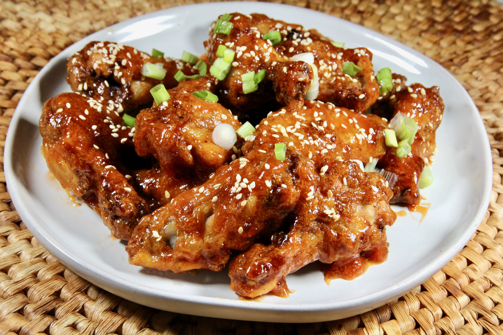

Air Fryer Sweet and Sour Wings

Description
Delicious and flavor blasting crispy wings. Make sure you have plenty of napkins!
Ingredients
Wings
- 1 1/2 pounds chicken wings, tips discarded
- 2 tablespoons baking powder
- 1 teaspoon salt
- 1 teaspoon ground pepper
- 1 teaspoon paprika
Sauce
- 1/2 cup white vinegar
- 1/4 cup pineapple juice
- 1/4 cup ketchup
- 1 tablespoon brown sugar
- 1 tablespoon reduced-sodium soy sauce
- 1 teaspoon Sriracha sauce
- 1 teaspoon sesame oil
- 1 tablespoon cornstarch
- 1 tablespoon water
- 3/4 teaspoon sesame seeds
- 1 stalk green onion, diced
Steps
- Preheat the air fryer to 380 degrees F (190 degrees C). Spray basket with cooking spray.
- Pat chicken wings dry with a paper towel. Whisk together baking powder, salt, pepper, and paprika; pour into a resealable plastic bag. Place some of the chicken wings into the bag and give it a good shake until wings are well coated. Shake off excess baking powder mixture and repeat with remaining wings until all wings are coated.
- Place chicken wings in the air fryer basket, and cook, flipping halfway through, 22 to 23 minutes.
- Meanwhile, combine vinegar, pineapple juice, ketchup, brown sugar, soy sauce, Sriracha, and sesame oil in a small saucepan over medium heat. Stir well and bring to a boil. Boil for about 2 minutes. Reduce heat to a simmer. Stir cornstarch and water together in a small bowl, pour into the saucepan, and quickly whisk until sauce thickens, about 1 minute. If sauce is too thick, thin out with a little water.
- Increase air fryer temperature to 400 degrees F (200 degrees C) and cook wings until cooked through and crispy brown, about 2 more minutes.
- Pour sauce into a large bowl and add the cooked wings. Toss to coat well. Garnish with sesame seeds and green onion and serve immediately.